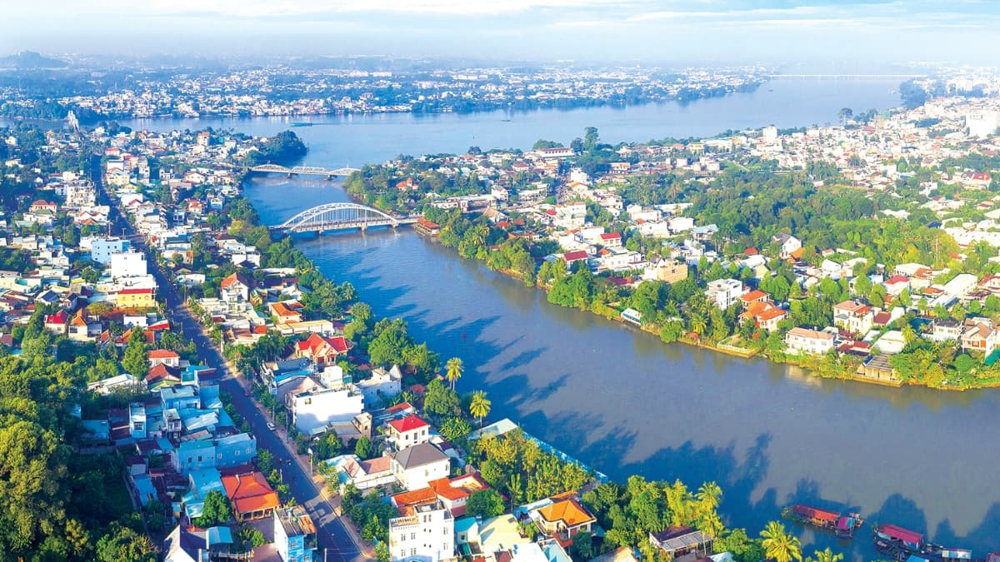
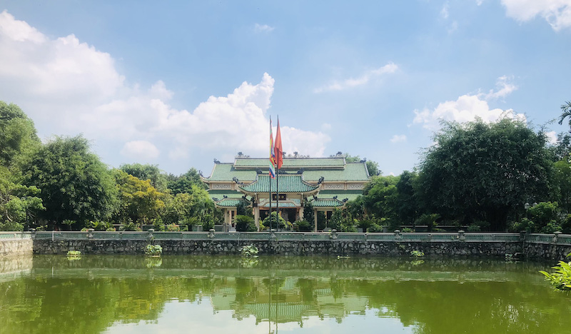
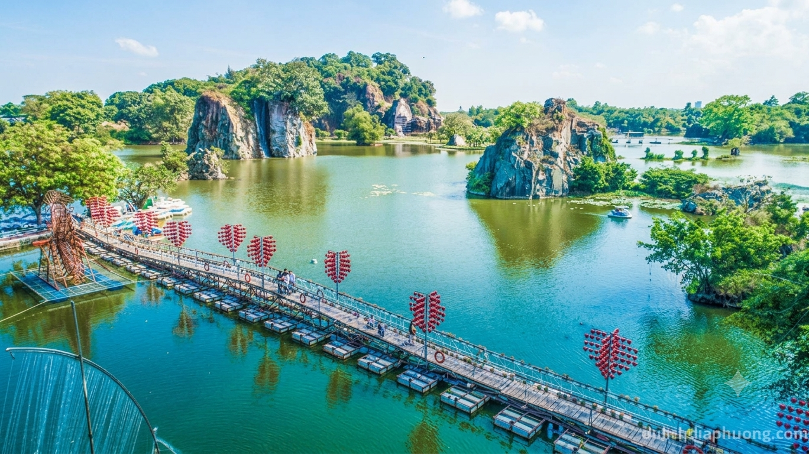

-Ngày xưa, Đồng Nai có nhiều tên gọi khác nhau. Các nhà bác học như Lê Quý Đôn và Trịnh Hoài Đức thường gọi vùng đất này là Lộc Dã hay Nông Nại. Những tên gọi ấy gợi lên cảnh hoang sơ thuở ban đầu, khi nơi đây có rất nhiều nai sinh sống.
-Từ hàng nghìn năm trước Công nguyên, vùng đất này đã có cư dân bản địa. Các di chỉ khảo cổ như Bình Đa, Hàng Gòn, Dầu Giây cho thấy họ làm nông nghiệp và chế tác đá, đồng, gốm. Họ góp phần hình thành văn hóa Đồng Nai, nền tảng của bản sắc vùng đất này.
Nhờ địa hình thuận lợi và tài nguyên trù phú, vùng đất này từ xưa đã thuộc lãnh thổ của các quốc gia cổ là Phù Nam, sau đó là Chân Lạp. Khi ấy dân cư còn thưa thớt, nhiều nơi là rừng rậm và đầm lầy.
Sang thế kỷ XVII, chúa Nguyễn ở Đàng Trong đẩy mạnh công cuộc mở rộng lãnh thổ về phương Nam. Lưu dân người Việt được khuyến khích vào khẩn hoang, dần hình thành những cộng đồng dân cư đông đúc
Năm 1679 , sau khi nhà Minh bị quân Mãn Thanh lật đổ, các tướng Dương Ngạn Địch và Trần Thượng Xuyên đưa khoảng 3.000 người Hoa đến xin chúa Nguyễn cho tị nạn. Nhận thấy tiềm lực của họ, chúa Nguyễn cho vào khai phá vùng Đồng Nai – Mỹ Tho để thúc đẩy sự phát triển của vùng đất mới. Nhóm của Trần Thượng Xuyên đến Đồng Nai, nhìn thấy tiềm năng lớn của vùng cù lao ven sông, bèn quy hoạch và biến nơi đây thành một thương cảng sầm uất mang tên Nông Nại Đại Phố, hay Cù Lao Phố.
Năm 1698, trước sự phát triển ngày càng lớn mạnh của vùng đất, chúa Nguyễn cử Lễ Thành hầu Nguyễn Hữu Cảnh vào kinh lược phía Nam. Ông lập phủ Gia Định, đặt dinh Trấn Biên (vùng Đồng Nai), nghĩa là vùng đất quan trọng nơi biên cương. Đây là mốc chính thức xác lập chủ quyền và địa danh hành chính, tạo sự ổn định và bước đệm để chúa Nguyễn tiếp tục phát triển


